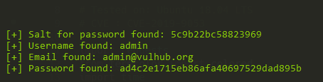

CMS Made Simple (CMSMS) < 2.2.10 Unauthenticated SQL Injection (CVE-2019-9053)¶
CMS Made Simple (CMSMS) is a free, open source content management system to provide developers, programmers and site owners a web-based development and administration area.
In the version prior to 2.2.9.1, CMS Made Simple was affected by a unauthenticated SQL injection attack, which attacker is able to gain the administrator's password or password reset token. Combining the authenticated SSTI issue (CVE-2021-26120), could allow an attacker to execute arbitrary code on the target server.
References:
Vulnerable Environment¶
Execute following command to start a CMS Made Simple 2.2.9.1:
docker compose up -d
After the server is started, you should install the CMS at http://your-ip/install.php.
Following the install instructions to install the CMSMS, MySQL database address is db, database name is cmsms, username and password are both root.

Exploit¶
Use the script on https://www.exploit-db.com/exploits/46635 to exploit the SQL injection vulnerability:
python2 poc.py -u http://127.0.0.1

As you can see, the administrator's password is exposed by SQL injection.